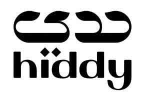

Trade Mark Journal No.2025/013 28 March 2025
UK00004173155 13 March 2025 (9,16,28)

- Class 9
- Downloadable software in the nature of a mobile application; 3D spectacles; Abacuses; Acoustic alarms; Sound alarms; Amplifying tubes; Amplifying valves; Astronomy (Apparatus and instruments for -); Audio interfaces; Baby monitors; Baby scales; Bags adapted for laptops; Camcorders; Cameras [photography]; Cases for smartphones; Cell phone straps; Downloadable computer game software; Computer game software, downloadable; Computer operating programs, recorded; Downloadable computer programs; Computer programs, recorded; Computer screen saver software, recorded or downloadable; Computer software platforms, recorded or downloadable; Computer software, recorded; Connected bracelets [measuring instruments]; Cosmographic instruments; Covers for electric outlets; Covers for personal digital assistants [PDAs]; Covers for smartphones; Covers for tablet computers; Decorative magnets; Digital photo frames; Personal digital assistants; Downloadable emoticons for mobile phones; Downloadable graphics for mobile phones; Downloadable image files; Downloadable music files; Downloadable ring tones for mobile phones; Electronic agendas; Electronic interactive whiteboards; Electronic pens [visual display units]; Electronic pocket translators; Eyewear; Laptop computers; Telescopes.
- Class 16
- Daily planners; Weekly planners; Planners [printed matter]; Monthly planners; Day planners; Printed calendars; Notebook paper; Blank paper notebooks; Post cards; Book marks; Calender-finished paper; Stickers; Blank journal books; Posters; Wall calendars; Postcards; Printed cards; Note paper; Notepaper; Diaries [printed matter]; Diaries; Writing paper; Writing or drawing books; Writing materials; Writing instruments; Writing chalk; Writing cases [sets]; Writing brushes; Writing board erasers; Tickets; Terrestrial globes; Teaching materials [except apparatus]; Stickers [stationery]; Signboards of paper or cardboard; Self-adhesive tapes for stationery and household purposes; School supplies [stationery]; Prospectuses; Postage stamps; Place mats of paper; Pens [office requisites]; Penholders; Pencils; Pencil sharpeners, electric or non-electric; Pencil leads; Pencil lead holders; Pencil holders; Boxes for pens; Pastels [crayons]; Papers for painting and calligraphy; Paper sheets [stationery]; Palettes for painters; Paintings [pictures], framed or unframed; Painters' easels; Painters' brushes; Paintbrushes; Paint trays; Paint boxes for use in schools; Note books; Newspapers; Newsletters; Musical greeting cards; Marking pens [stationery]; Manuals [handbooks]; Magazines [periodicals]; Labels of paper or cardboard; Index cards [stationery]; Greeting cards; Glue for stationery or household purposes; Pastes for stationery or household purposes; Glitter for stationery purposes; Geographical maps; Garbage bags of paper or of plastics; Fountain pens; Forms, printed; Folders for papers; Flyers; Drawing sets; Drawing rulers; Drawing pens; Drawing pads; Drawing materials; Drawing instruments; Drawing boards; Document files [stationery]; Copying paper [stationery]; Comic books; Coasters of paper; Catalogues; Cards; Cardboard; Calendars; Bunting of paper; Boxes of cardboard or paper; Books; Bookmarkers; Booklets; Bibs, sleeved, of paper; Paper bibs; Banners of paper; Banknotes; Bags [envelopes, pouches] of paper or plastics, for packaging; Baggage claim check tags of paper; Atlases; Watercolors [paintings]; Watercolor paintings; Announcement cards [stationery]; Almanacs; Albums; Scrapbook albums.
- Class 28
- Card games; Water wings; Video game machines; Video game consoles; Twirling batons; Tricycles for infants [toys]; Trampolines; Trading cards for games; Toys for pets; Toy vehicles; Toy robots; Toy putty; Toy pistols; Toy models; Toy mobiles; Toy imitation cosmetics; Toy figures; Toy dough; Toy air pistols; Tennis nets; Tennis ball throwing apparatus; Teddy bears; Targets; Tables for table tennis; Swings; Swimming webs; Swimming gloves; Webbed gloves for swimming; Swimming pools [play articles]; Swimming pool air floats; Swimming kickboards; Swimming jackets; Swimming belts; Surfboards; Surfboard leashes; Surf skis; Stuffed toys; Skateboards; Scooters [toys]; Scent lures for hunting or fishing; Scale model vehicles; Scale model kits [toys]; Roller skates; Rods for fishing; Rocking horses; Ring games; Bats for games; Rackets; Protective films adapted for screens for portable games; Portable games with liquid crystal displays; Portable games and toys incorporating telecommunication functions; Plush toys with attached comfort blanket; Plush toys; Playing cards; Playing balls; Play tents; Play balloons; Piñatas; Marbles for games; Kaleidoscopes; Joysticks for video games; Hand-held consoles for playing video games; Flippers for diving; Electronic targets; Elbow guards [sports articles]; Educational games; Dumb-bells; Drones [toys]; Draughts [games]; Checkers [games]; Draughtboards; Checkerboards; Dominoes; Dolls' rooms; Dolls' houses; Dolls' feeding bottles; Dolls' clothes; Dolls' beds; Dolls; Controllers for toys; Toys; Chessboards; Chess games; Butterfly nets; Building games; Building blocks [toys]; Bows for archery; Boomerangs; Baby gyms; Archery implements; Arcade video game machines; Amusement machines, automatic and coin-operated.
TAKAFA LIMITED